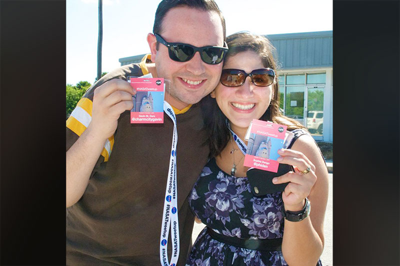
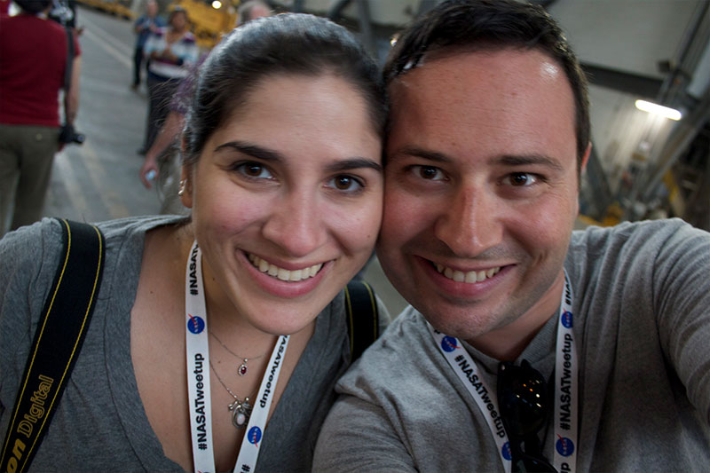

We met at the last launch of the space shuttle Discovery, in 2010. This was the very first picture taken of us, after getting our NASA credentials.
We were two of the 15 total strangers staying in a house together for 10 days.

Because Discovery failed to launch when she was supposed to, we had a lot of time to explore Cape Canaveral and Kennedy Space Center together.
When Discovery finally launched months later in 2011, we were there to see her go.
In front of Kennedy's historic countdown clock.
We were also there to greet Discovery at the Air & Space Museum in April 2012.
About a year later, we relocated -- together -- from Atlanta and Baltimore to San Francisco.
We spent nearly 3 years in San Francisco, where we learned how nice it is to need a sweater in mid-summer.
December 2014 -- Gavin experienced his first Guatemalan Christmas.
2015 was the year that Sophia discovered she's a WWE fan.
...and the year we took our first real vacation to Wrestlemania, in San Jose, California.
We also took a trip to New York for a friend's wedding.
We made good use of a black-tie dress code and a photo booth.
(Photo by Russell Brammer Photography)
A few months later, Gavin asked Sophia to marry him while watching the sunset over the Golden Gate Bridge. (Then we went to see the new Star Wars.)
It's been over six years, and space shuttles still make us happy (even if they are made of Lego).
(Photo by Kelly Prizel)
Now we live in Baltimore again, and celebrated our -1 year anniversary in the Inner Harbor.
(Photo by Amber Marlow)
We're looking forward to enjoying each other for a very long time to come.
(Photo by Kelly Prizel)
We hope to see you in Baltimore in 2017!
(Photo by Amber Marlow)